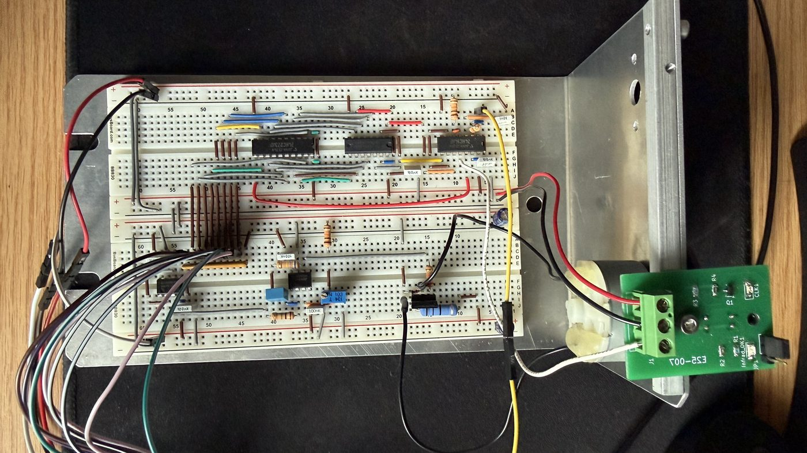

DC Motor RPM Controller

A fully analog/digital closed-loop DC motor speed controller built from discrete ICs for ENPH 259 at UBC. A phototransistor encoder feeds an 8-bit counter clocked by a Schmitt-trigger oscillator; a D-latch samples the count at 5 Hz and holds it steady while the counter resets. An R-2R ladder DAC converts the digital count to a voltage, which an op-amp PI controller compares against the setpoint to drive an NPN BJT motor stage. Achieves 0–3480 RPM across a 0–2.5 V setpoint range, with a maximum angular speed of 364 rad/s.
How it works
The controller closes the loop entirely in hardware — there is no microcontroller in the signal path. The speed measurement and control chain runs end to end as:
- Optical encoder. A phototransistor on a small custom board senses slots on the motor shaft, producing one pulse per slot so shaft speed becomes a pulse frequency.
- Counter + time base. A Schmitt-trigger relaxation oscillator defines a fixed measurement window; an 8-bit counter accumulates encoder pulses over that window, so the count is proportional to RPM.
- Sample & hold. A D-latch captures the count at 5 Hz and holds it steady on its outputs while the counter is cleared for the next window, giving a flicker-free digital speed reading.
- R-2R DAC. The latched 8-bit word drives an R-2R ladder that reconstructs the measured speed as an analog feedback voltage.
- PI controller. An op-amp compares the feedback voltage against the operator setpoint and applies proportional-plus-integral control to drive the error toward zero.
- Power stage. The controller output drives an NPN BJT stage that delivers current to the motor, completing the loop.
Specifications
- Speed range: 0–3480 RPM (max angular speed 364 rad/s)
- Setpoint input: 0–2.5 V analog
- Feedback resolution: 8-bit (R-2R ladder DAC)
- Sample rate: 5 Hz sample-and-hold update
- Control law: analog PI, implemented on a single op-amp
What I did
This was a team lab where we built the entire speed-control loop from scratch on a breadboard. I built the timing chain out of a string of Schmitt-trigger inverters with RC delays to generate the latch and reset pulses, wired up the 8-bit counter and D-latch, and then ran the latched word into an R-2R ladder DAC followed by a unity-gain buffer so the ladder could drive the rest of the circuit without its voltage sagging. The error amplifier is an op-amp integrator — the integral term that gradually drives the speed error to zero — and a BJT current driver with a flyback diode across the motor closes the loop.
The hardest part was getting the timing right and debugging across the digital/analog boundary. At one point an inverter stopped inverting and I chased it for a while before tracing it to a wiring error that shorted the input to ground; the latch also failed to capture cleanly until I sorted out the function-generator frequencies driving it. Watching the DAC output slowly ramp toward the setpoint as the error changed sign was what made the integrator’s behavior finally click for me. With a 10-hole encoder wheel sampled at 5 Hz, the finished controller held a commanded speed across 0–3480 RPM over a 0–2.5 V setpoint (a maximum angular speed of 364 rad/s).
If I extended it, the next steps would be adding a tunable proportional term to compare PI response and stability across gain settings, and swapping the discrete counter/latch for a microcontroller while keeping the same analog front end.
Full Lab Report
The complete ENPH 259 Lab 7 write-up — full circuit design, scope captures, and analysis.